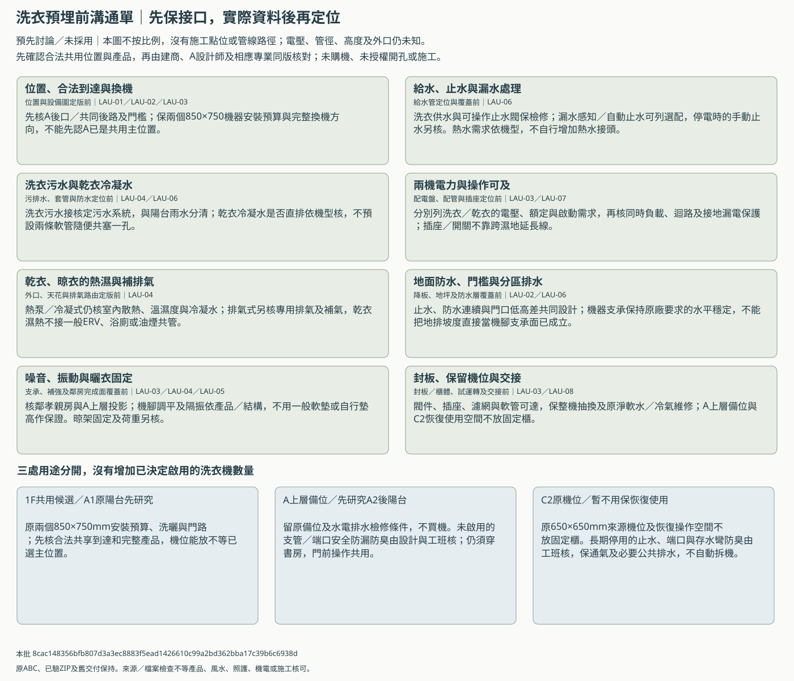

洗衣預埋前：給排水、電力、排濕與維修
這是預先溝通單，未選共用主位置、機型或施工點位，未決定管徑／電氣規格、外口或採購。原格局及已驗3D不改；有圖不等核准施工。
先與建商及A設計師保住一樓共用候選、A上層備位和C2恢復使用的空間與可檢修接口。乾衣先研究熱泵／冷凝式，排氣式保條件比較；實際主位置、完整產品與機電圖到齊後再定點位及施工，不先買機、鑽孔或把一般新風當乾衣排濕。


三處保留用途
| 位置 | 保留範圍 |
|---|---|
| 1F共用候選／A1原陽台先研究 | 原兩個850×750mm安裝預算、洗曬與門路；先核合法共享到達和完整產品，機位能放不等已選主位置。 |
| A上層備位／先研究A2後陽台 | 留原備位及水電排水檢修條件，不買機。未啟用的支管／端口安全防漏防臭由設計與工班核；仍須穿書房，門前操作共用。 |
| C2原機位／暫不用保恢復使用 | 原650×650mm來源機位及恢復操作空間不放固定櫃。長期停用的止水、端口與存水彎防臭由工班核，保通氣及必要公共排水，不自動拆機。 |
依既有議題交給建商與A設計師
| 接口 | 最晚核對時點 | 現在先保留 | 資料到齊後須核 | 原問題／A接口 | 建議窗口，未議定 |
|---|---|---|---|---|---|
| 位置、合法到達與換機 | 位置與設備圖定版前 | 先核A後口／共同後路及門檻；保兩個850×750機器安裝預算與完整換機方向，不能先認A已是共用主位置。 | 正式總平面、合法開口、牆柱／完成面、產品門片及換機包絡；A前側810假設瓶頸與後門行程20mm餘量須同版回核。 | BC-06／BC-16／A-IF-01／A-IF-10 | 建商／建築及相應專業＋A設計師＋設備安裝者，承作分工待議 |
| 給水、止水與漏水處理 | 給水管定位與覆蓋前 | 洗衣供水與可操作止水閥保檢修；漏水感知／自動止水可列選配，停電時的手動止水另核。熱水需求依機型，不自行增加熱水接頭。 | 供水壓力、原廠接管需求、閥件操作範圍、接頭不被機身封死及壓力／漏水檢查紀錄。 | BC-14／A-IF-03／A-IF-10 | 建商機電＋設備安裝者；A設計師核可及與收口，責任待議 |
| 洗衣污水與乾衣冷凝水 | 污排水、套管與防水定位前 | 洗衣污水接核定污水系統，與陽台雨水分清；乾衣冷凝水是否直排依機型核，不預設兩條軟管隨便共塞一孔。 | 管徑、坡度、接管高度、存水彎／通氣／掃除與防回流的同版圖，合法終端及運轉排水試驗；數值由設計與原廠定。 | BC-14／A-IF-03／A-IF-10 | 建商給排水設計／施工＋設備安裝者，A設計師核完成面，責任待議 |
| 兩機電力與操作可及 | 配電盤、配管與插座定位前 | 分別列洗衣／乾衣的電壓、額定與啟動需求，再核同時負載、迴路及接地漏電保護；插座／開關不靠跨濕地延長線。 | 同型號供電需求、盤表與配線保護、可及且避濺的點位及測試方法；不預填110／220V、安培、線徑或插座高度。 | BC-15／A-IF-05／A-IF-10 | 建商電氣設計／施工＋設備安裝者；A設計師核家具及可及，責任待議 |
| 乾衣、晾衣的熱濕與補排氣 | 外口、天花與排氣路由定版前 | 熱泵／冷凝式仍核室內散熱、溫濕度與冷凝水；排氣式另核專用排氣及補氣，乾衣濕熱不接一般ERV、浴廁或油煙共管。 | 原廠通風／間距、合法外口、防雨防蟲、進排氣相互影響、完整管長阻力及棉絮清理；沒有資料不先打洞或封天花。 | BC-12／BC-16／A-IF-04／A-IF-10 | 建商空調／通風設計＋設備安裝者＋A設計師；外口由相應專業核，責任待議 |
| 地面防水、門檻與分區排水 | 降板、地坪及防水層覆蓋前 | 止水、防水連續與門口低高差共同設計；機器支承保持原廠要求的水平穩定，不能把地排坡度直接當機腳支承面已成立。 | 完成標高、防水與穿管收口、合法地面排水及防倒灌剖面，排水／防水測試；平門檻目標不等已核無障礙。 | BC-14／BC-20／A-IF-03／A-IF-10 | 建商建築／給排水與防水工班＋A設計師，保固邊界待議 |
| 噪音、振動與曬衣固定 | 支承、補強及鄰房完成面覆蓋前 | 核鄰孝親房與A上層投影；機腳調平及隔振依產品／結構，不用一般軟墊或自行墊高作保證。晾架固定及荷重另核。 | 樓板支承、脫水工況、噪音振動目標／實測方法及使用時段；升降架承重、可及高度、衣物外廓與暗管避讓。 | BC-06／BC-20／A-IF-08／A-IF-10 | 建商相應結構／聲學與施工＋設備安裝者＋A設計師，責任待議 |
| 封板、保留機位與交接 | 封板／櫃體、試運轉及交接前 | 閥件、插座、濾網與軟管可達，保整機抽換及原淨軟水／冷氣維修；A上層備位與C2恢復使用空間不放固定櫃。 | 隱蔽管線照片、實際圖號版次、試驗原始紀錄及保養責任；C2停用口防臭防漏措施由工班核，不封死通氣或公共排水。 | BC-17／BC-20／BC-22／A-IF-10／A-IF-11 | 建商／設備安裝者與A設計師共同交接；承作、價差、工期與保固待議 |
乾衣兩方向，接口分別核
| 研究方向 | 要保的條件 | 仍有的限制 |
|---|---|---|
| 熱泵／冷凝式：先研究 | 平放備位、產品供電與散熱空間；冷凝水直排或集水盒依機型，仍核晾衣區排濕補氣。 | 不因免一般熱風排氣管就稱免通風，先核原廠環境限制、程序／床品與維修；未選機。 |
| 電力排氣式：保條件比較 | 平放備位、足夠供電、合法獨立排氣終端與補氣及棉絮清理路徑。 | 外口／管長阻力／防雨與補氣可行後再比較；本輪未規劃燃氣，未先開孔或將排氣接ERV。 |
收到資料後怎麼處理
- 先核共用位置／合法通路及完成牆柱，再核同型號的機身、全開門、接管、散熱及整機換出；不把850×750預算當實際產品核可。
- 機電依產品及現場條件出同版點位、系統與剖面，所有數值注明依據；完成設計審查、費用與工期確認後，施工圖另行發行。
- 埋管、套管、防水與封板等工序前，沿原檢查表記通知／試驗／照片／缺失覆查；本頁未代填任何通過。
- A設計師另談裝潢，預埋與保固分界由建商共同核；C2暫不用仍保恢復路線，不封死公共排水或通氣。
- 回覆用原builder-replies.csv的BC問題列、a-interface-matrix.csv及inspection-log.csv，不另加必填表；報價仍按原範圍拆明預留／實作／選配。
20欄實際條件仍全空，空白不是0或不需要；另存副本補資料，不讀私人回覆或自動套圖。
本批 8cac148356bfb807d3a3ec8883f5ead1426610c99a2bd362bba17c39b6c6938d；30項父來源與149保護項保持。靜態文件核對，未啟動瀏覽器、實機或專業驗收。